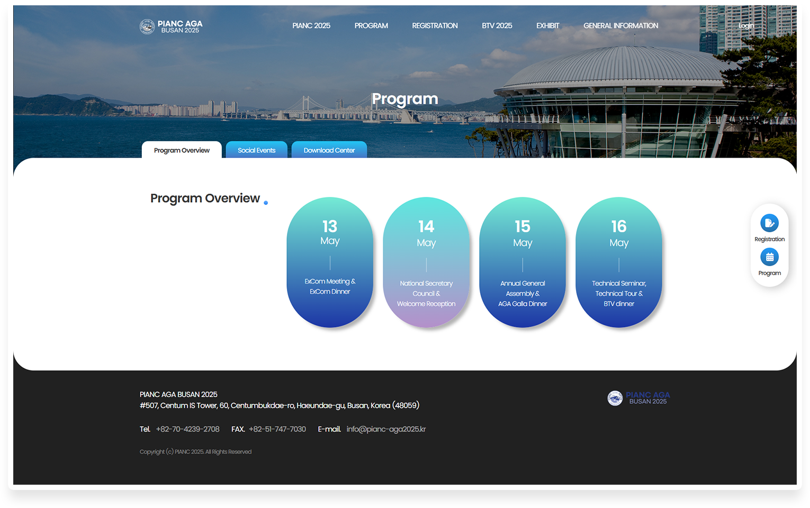

PIANC AGA
BUSAN 2025
Year. 2024. 11 ~ 2024. 12
Project overview
About the organization
PIANC AGA 2025는 수상 운송 인프라, 해운산업과 관련된 광범위한 주제를 다루는 고위 기술 보고서를
발행하기 위해 국제 전문가들이 참여하는 국제 컨퍼런스입니다.
이번해에 한국에서 처음으로 개최되기 때문에 한국에서 홈페이지를 새로 구축하는 작업이 시급하다고 요청이 왔고,
전체적으로 단정하고 깔끔한 느낌의 홈페이지를 요구했습니다.
Use Stack
- Photoshop
- Illustrator
- html5
- css3
- js(GSAP)
Project Contribution
디자인 100% + 퍼블리싱 100%
Before
기존 홈페이지는 기본적인 블로그 형식의 디자인과 사각형의 틀 모양, 기본 폰트가 미완성된 느낌을 줍니다.
중간부분에 업로드된 그림들이 선명하지 않고 희미해서 마치 사용하지 않는 홈페이지처럼 보이게 합니다.
포인트 컬러가 2개이상이라서 집중도를 떨어지게 만듭니다.
행사일정이 보이지 않아서 불편함을 줍니다.
After
해운산업을 상징하는 파란색으로 포인트 컬러를 주었고, 각진 사각형 모서리들은 라운드 효과를 주어 부드럽게 보이게 했습니다.
남은 행사일을 확인하기 위해 디데이 요소를 추가했습니다.
가독성을 위해 여백과 폰트 강약을 주었고, 서브페이지에는 전체적으로 푸른 그라데이션 컬러를 사용하여
섹션 메뉴들을 버튼처럼 보이게 입체감을 주었습니다.
페이지를 볼때 부드럽게 넘어가도록 스무스한 스크롤 효과도 추가했습니다.
주최측에서 디자인이 깔끔하고 가독성이 굉장히 높다는 평을 받았습니다.
Sub page
